IntroAI_HW3 "Aliens game" Lab Report
报告题目：Aliens 游戏
王崧睿 221502011 detect0530@gmail.com
2023年11月
1 引言
之前研究过一些机器学习算法，很高兴能在这次作业里学习并运用检测不同算法对该问题的适用性。
2 实验准备
Task1
2.1 任务概述：
通过学习并观察代码框架，发现我需要先完成一次游戏，再对我完成游戏中的行为的特征提取，采用surpervised分类算法，让机器学会我的操作思路和细节。
2.2 思路制定：
明确目标：要在不被炸弹炸死且不能让alien进入最后一层，同时尽可能快的结束游戏。
我发现出怪的时间间隔是固定的，如果我们能对准轴，那么我们就可以在出怪的时候炸死它们，所以第一步就是先左移然后尽可能在刷怪时就歼灭之。
而当出现漏怪的情况，我们先按兵不动，因为如果转火去追击，那么就必须放弃即将新刷出来的怪，得不偿失。但是如果停止刷怪，或者大部分怪已经刷出来了，那么就该改变策略去歼灭了。
言而总之，战术分为两个部分：
- 一开始的定点打击，旨在尽可能多的歼灭敌人。此时不会主动移动，只会不断发射子弹，同时闪避炸弹。
- 当敌人数量下降到一定地步后，追击歼灭，旨在尽快结束游戏。此时会主动移动去追击剩余的敌人，以尽快结束游戏。
2.3 示范教学局
按照上述思路打通一次游戏就行。（p.s. 这游戏手打真难
3 多种学习方法
3.1. Naive Bayes
朴素贝叶斯（Naive Bayes）算法是一种基于贝叶斯定理的分类算法，它假设特征之间是相互独立的，这是“朴素”一词的来源。
算法原理：
-
贝叶斯定理： 朴素贝叶斯算法基于贝叶斯定理，该定理描述了在已知先验概率的情况下，如何更新这些概率以获得后验概率。对于分类问题，这可以表示为给定特征（观察到的数据），我们希望计算类别的后验概率。
-
朴素假设： 朴素贝叶斯算法假设特征之间是相互独立的，这意味着给定类别的情况下，每个特征对于分类的贡献是独立的。这个假设简化了概率计算，降低了模型的复杂性。
-
条件独立性： 基于朴素假设，朴素贝叶斯分类器计算每个特征在给定类别下的条件概率，然后使用贝叶斯定理结合这些条件概率来计算后验概率，最终选择具有最大后验概率的类别作为预测结果。
感性理解：
朴素贝叶斯可以理解为一个简单而有效的分类器，其工作原理类似于一个投票系统。每个特征都投出一票，然后根据这些特征的投票来判断样本属于哪个类别。虽然它对特征的独立性作了朴素的假设，但在许多实际情况下，这种简化并不妨碍其在文本分类、垃圾邮件过滤等任务中的表现。
优势：
-
简单有效： 朴素贝叶斯算法是一种简单而有效的分类方法，特别适用于高维数据和大规模数据集。
-
快速训练： 由于朴素贝叶斯算法的简单性，它的训练速度通常比复杂模型快。
-
对小规模数据表现良好： 在小规模数据集上，朴素贝叶斯通常能够取得不错的表现。
劣势：
-
朴素假设： 特征之间的独立性假设在某些情况下可能不成立，这可能导致模型的偏差。
-
对输入数据分布敏感： 朴素贝叶斯对输入数据的分布比较敏感，如果数据与假设的分布不符，性能可能下降。
综上，朴素贝叶斯是一个简单而强大的分类算法，特别适用于文本分类等任务。在合适的场景下，它可以是一个很好的选择。
3.2 KNN
K最近邻（K-Nearest Neighbors，简称KNN）是一种基本的监督学习算法，用于分类和回归任务。该算法的核心思想是基于邻居的投票机制，即通过观察其K个最近邻的标签来对新样本进行分类或预测。
算法原理：
-
邻居选择： 对于一个未标记的样本，KNN算法计算它与训练数据中每个样本的距离，通常使用欧氏距离或其他距离度量。然后选择离它最近的K个样本作为邻居。
-
投票机制： 对于分类任务，KNN采用多数投票的方式，即将K个邻居中最常见的类别作为未标记样本的类别。对于回归任务，可以取K个邻居的平均值作为预测结果。
-
距离权重： 在一些情况下，可以根据距离的远近给邻居分配不同的权重，距离越近的邻居权重越大，这样可以使得更近的邻居对预测结果的影响更大。
感性理解：
KNN可以看作是一种基于相似性的方法，即认为相似的样本在特征空间中更加接近。当需要对一个未知样本进行分类或回归时，KNN找到与之最相似的已知样本，通过这些样本的标签或数值来预测未知样本的标签或数值。
优势：
-
简单直观： KNN是一种非常简单的算法，易于理解和实现。
-
适用于多类别问题： KNN适用于多类别分类问题，且对于类别之间的决策边界不规则的情况表现较好。
-
无需训练阶段： KNN是一种懒惰学习（lazy learning）算法，不需要显式的训练过程。模型的构建发生在预测时。
劣势：
-
计算开销大： 在预测时，需要计算未知样本与所有训练样本之间的距离，对于大规模数据集和高维数据，计算开销可能会很大。
-
对异常值敏感： KNN对异常值敏感，因为它的预测结果很大程度上取决于最近邻的样本。
-
维数灾难： 随着特征维度的增加，样本之间的距离变得更加模糊，KNN的性能可能下降。
综上，KNN是一种简单而强大的算法，特别适用于小规模数据集和相对低维的特征空间。在选择K值时，通常需要通过交叉验证等方法进行调优。
3.3 Random Forest
随机森林是一种集成学习算法，它通过结合多个决策树来进行预测或分类任务。
算法原理：
-
决策树基础： 随机森林是基于决策树的算法。决策树是一种通过对数据集进行递归划分，最终生成决策规则的算法。
-
Bagging思想： 随机森林采用Bootstrap Aggregating（Bagging）的思想。Bagging通过从原始数据集中有放回地抽取多个子集，然后分别在这些子集上训练独立的模型，最后将它们的结果综合起来。
-
随机特征选择： 在每个决策树的训练过程中，随机森林引入了额外的随机性，即每次在节点分裂时，只考虑一个随机子集的特征。这有助于增加模型的多样性，防止过拟合。
-
投票机制： 对于分类任务，随机森林通过投票机制来确定最终的类别。每个树对新样本进行分类，最后选择得票最多的类别作为最终预测结果。
感性理解：
随机森林可以看作是一群专家，每个专家都是一棵决策树。每个专家都在自己的领域有一定的见解，通过多个专家的共同努力，可以得到更为准确的预测。这就好比在做决策时，你会咨询多个专家的意见，综合考虑他们的建议来做出最终的决策。
优势：
-
高准确性： 随机森林通常在训练和测试数据上都能获得较高的准确性，即使在处理大量特征和数据的情况下也能表现良好。
-
抗过拟合： 通过Bagging和随机特征选择，随机森林对于过拟合有较强的抵抗能力，即使训练数据噪声较大，模型也能取得良好的泛化能力。
-
特征重要性： 随机森林可以评估特征的重要性，帮助理解数据中哪些特征对于模型的性能贡献最大。
劣势：
-
模型可解释性差： 由于随机森林是由多个决策树组成的，模型结构相对复杂，难以直观解释。
-
计算开销较大： 相对于单一决策树，随机森林需要更多的计算资源和时间来训练和预测。
综上，随机森林是一种强大的机器学习算法，特别适用于复杂的分类和回归问题.
3.4 Adaboost
AdaBoost（Adaptive Boosting）是一种集成学习方法，通过组合多个弱学习器（通常是决策树）来构建一个强学习器。AdaBoost的核心思想是逐步提升模型性能，对前一轮中分类错误的样本增加权重，以便下一轮中的模型能够更关注这些难以分类的样本。
算法原理：
-
基本分类器： AdaBoost可以选择任何弱学习器，但通常使用的是决策树，且每个决策树仅进行一次分类，被称为“弱分类器”。
-
样本权重： 每个样本都有一个初始权重，初始时所有样本的权重相等。在每一轮训练中，被错误分类的样本的权重会增加，使得这些样本在下一轮中更受关注。
-
弱学习器组合： 每个弱学习器都会有一个权重，该权重取决于其在当前轮中的性能。通过加权投票或加权求和来组合所有弱学习器，构建出一个更强大的分类器。
-
更新权重： 在每一轮中，样本的权重会被更新。被错误分类的样本权重增加，被正确分类的样本权重减小。
-
最终预测： 所有弱学习器的加权组合形成最终的分类器。对于二分类问题，预测结果为加权投票，对于多分类问题，通常使用加权投票或加权求和。
感性理解：
AdaBoost可以被看作是一个集体决策的过程，每个“成员”（弱学习器）都在解决问题的不同方面表现得很好。每个成员都有一个“投票”，而AdaBoost会根据每个成员的表现对其进行加权，从而形成一个强大的团队，能够在整体上更好地解决问题。
优势：
-
提高模型性能： AdaBoost能够通过组合多个弱学习器来提高整体模型的性能。
-
不容易过拟合： 由于关注错误分类的样本，AdaBoost对于噪声数据的过拟合有一定的抵抗力。
-
适用于多种学习任务： 可以用于分类问题，也可以用于回归问题。
劣势：
-
对噪声数据敏感： 对于包含大量噪声的数据，AdaBoost可能表现不佳。
-
计算开销相对较大： 由于每一轮都需要更新样本权重，AdaBoost的计算开销相对较大。
-
对离群值敏感： 对于离群值较为敏感，可能会受到异常样本的影响。
综上，AdaBoost是一种强大的集成学习算法，特别适用于处理复杂的分类问题。
4 第一次实验结果
在不对特征提取函数修改情况下，我对在#2中提到的游戏思路进行了实战并保存了特征数据。
接下来是对不同算法的实验结果：
(注：所有结果都在下进行，尽量避免结果的过拟合)
4.1 Naive Bayes
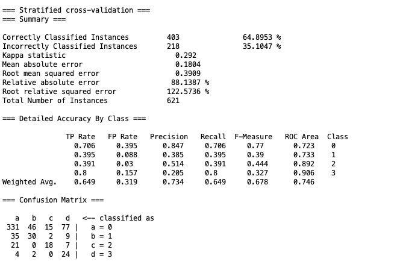
运行结果上，avater确实一开始往左走，在敌人数量下降后开始移动射击，但是走位完全是随机的，没法准确命中目标。
4.2 KNN
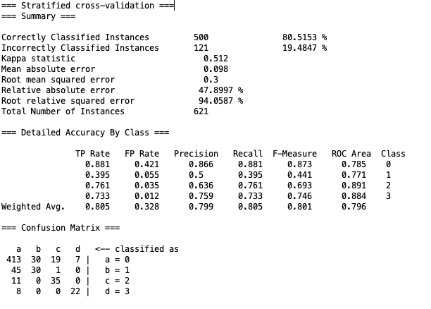
KNN的纸面数据结果比Naive Bayes好一些，正确率与误判率都有提升。
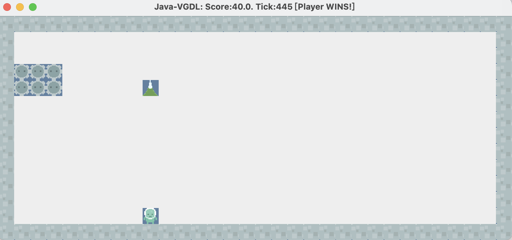
如图，仅在445tick内完成游戏，但是在这个过程中，avater却几乎不怎么走位，算法没有调控好定点射击和追击歼灭的平衡。
4.3 Random Forest
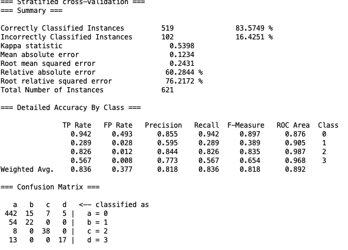
纸面数据又有提升。
但是实际结果又走向另一个极端，过早的进入歼灭追击模式，但精度不够，导致游戏时间过长。
4.4 Adaboost
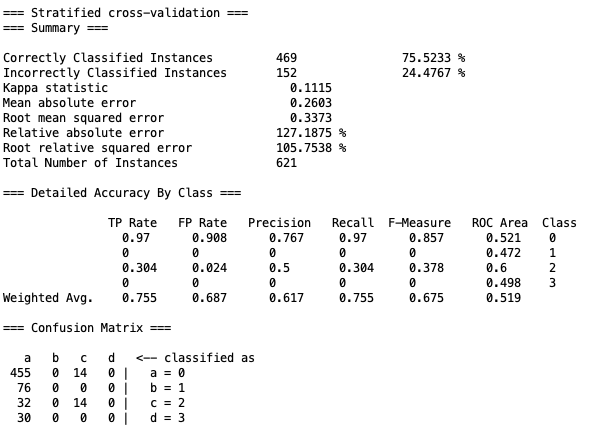
结果依然不好，一开始直接左移到头，然后就一直发射弹药不动了。
4.5 第一次实验总结
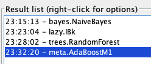
| 算法 | 定点打击 | 追击歼灭 |
|---|---|---|
| Naive Byes | OK | 随机打不准 |
| KNN | OK | 几乎没有 |
| Random Forest | 没有 | OK |
| Adaboost | OK | 完全没有 |
可以看到学习算法都无法完美学习到我的游戏战术，究其原因，可能是数据样本太小，或者是特征提取函数的问题。
同时注意到实验中avater很难学习到如何躲避炸弹，其原因很可能是在训练中很少有垂直炸弹我去躲避，即使有，次数也很少相应的权值也太低了，所以avater也学不会这个行为。
5 算法改进
鉴于架构原因，我无法扩增数据容量，所以我决定改进特征提取函数，解决上述提出的各种问题。
具体来说，分为以下两点改进：
-
追击歼灭时，为了防止其随机走动，我添加三个特征，分别是：是否有敌人在左侧，是否有敌人在右侧，是否有敌人在正前方。这样avater就可以根据这些特征来决定走位，而不是随机走动。在我的示范里我会尽量维持敌人左右均衡的状态，这样avater就会在左右移动中寻找更佳的射击位置。
-
躲避子弹，设置boolean类的特征，表示当前位置上空是否有炸弹，是的话赋值为100，反之为-100，同时训练时只要上空有炸弹我就尽快躲避，尽可能多得保持上空无炸弹也即boolean为false的状态，这样学习后可以有效避免被炸弹炸死的情况。
同时为了增加为设置的特征向量的比重，为将上空是否有炸弹的特征向量的比重提高到100，左右上的敌人数比重提升至10，这样可以强化特征学习。
1 | public static double[] featureExtract(StateObservation obs){ |
6 第二次实验结果
以下所有实验均在cross-validation : 10下进行。保证不会太过拟合且样本数也得到保证。
所以纸面实验数据肯定不如全部作为training set优秀，但是实际结果却更加稳定，更与纸面数据相符。
6.1 Naive Bayes
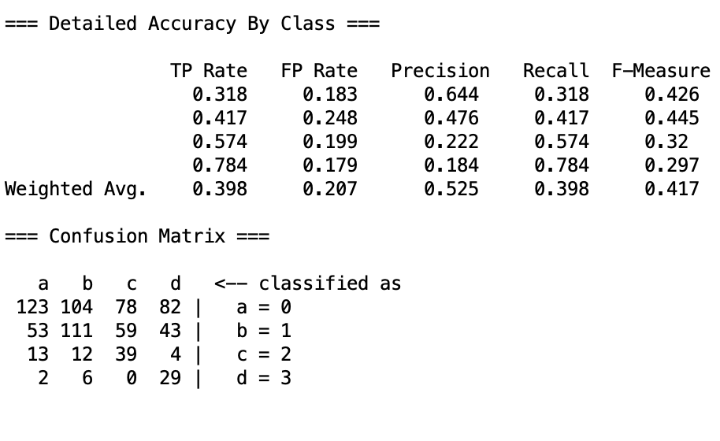
结果反而更佳糟糕，这是因为Naive Bayes算法的特征独立性假设且过于简单，导致其无法学习到多个特征之间的关系，所以这种改进对Naive Bayes算法无效。
具体结果中，会呈现出不确定性，没有学习到重要特征。
6.2 KNN
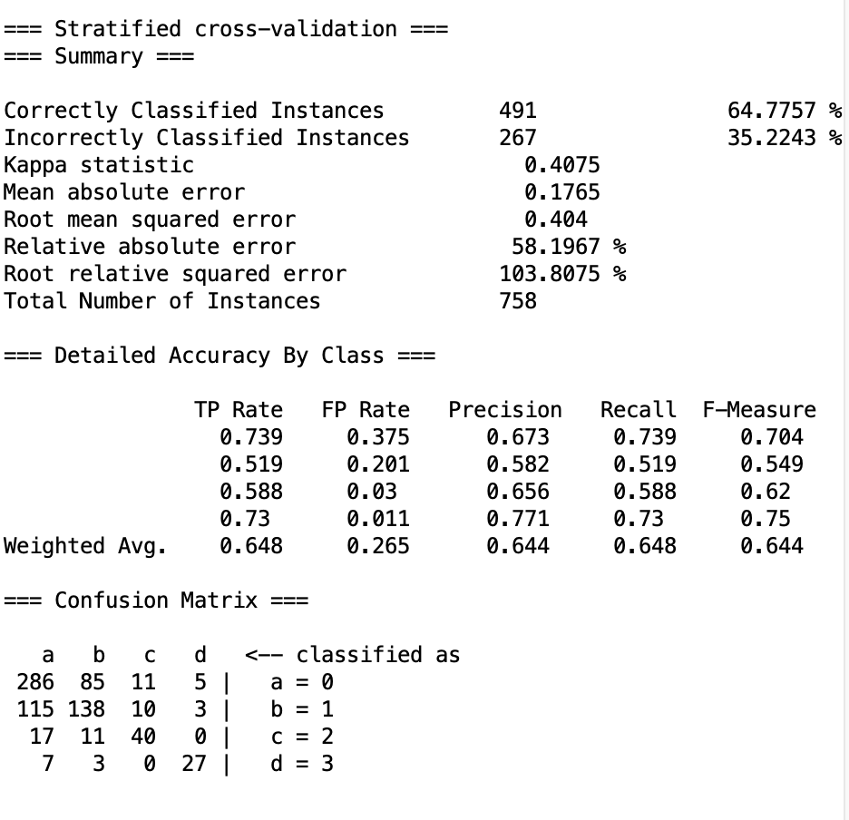
当设置 时，纸面数据与第一次相比提升不大。
但是惊喜的是，实际结果却有了很大的提升，avater可以在不被炸弹炸死的情况下，尽可能快的歼灭敌人。
具体而言，avater学会了：
- 一开始左移持续射击，然后在敌人数量下降后，开始追击歼灭。
- 追击时方向准确，不会往没人的一边跑
- 有炸弹时早早避开
当时：
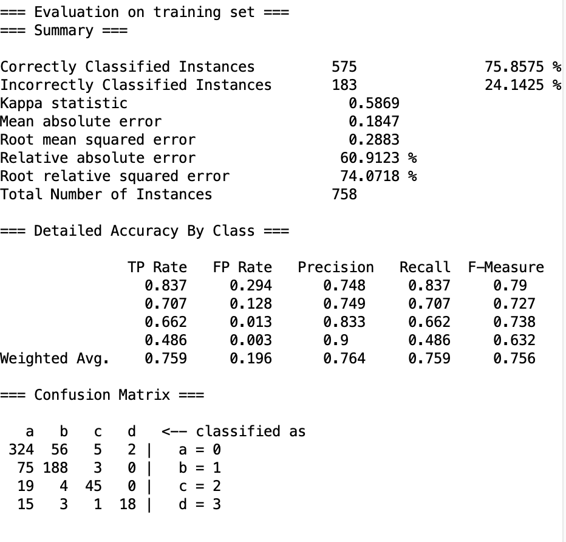
纸面数据有了提升，同时实际表现与K=1时相差不大，但是实际表现更加稳定，所以我选择作为最终的。
大概在450tick左右可以完成游戏。
6.3 Random Forest
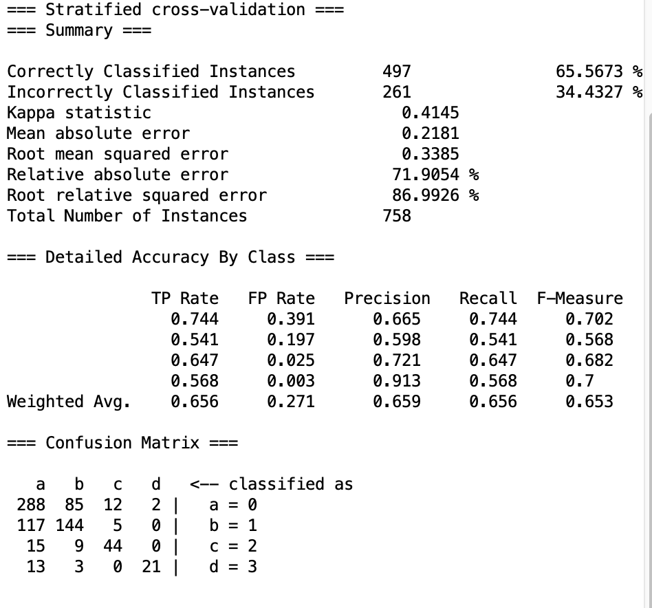
数据表现差异不大，
实际实验时呈现三段式表现：
- 一开始左移定点射击表现不错
- 而后追击歼灭模式表现也还行
- 但当敌人数量下降至三以内时，会贴边不动了。
所以耗时较长。
6.4 Adaboost
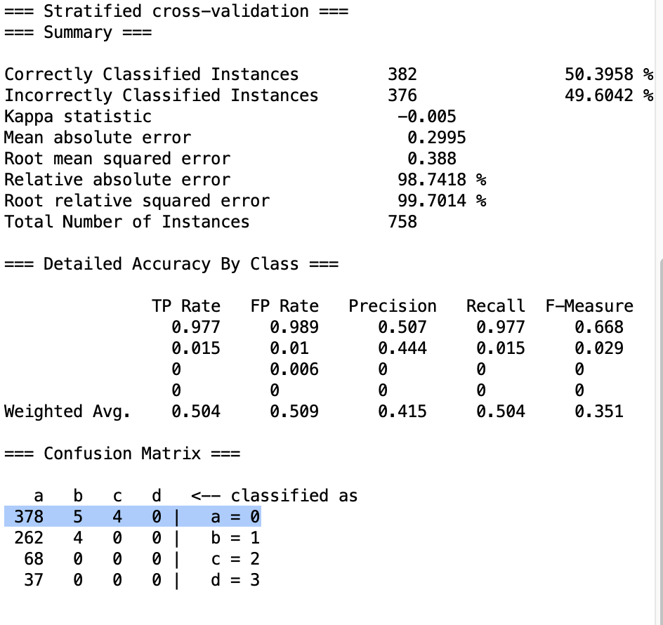
就实验数据反而是负提升，实际结果也不好。
会在一开始左移，然后不动了。
6.5 第二次实验总结
| 算法 | 定点打击 | 追击歼灭 |
|---|---|---|
| Naive Byes | 随机 | 随机 |
| KNN | OK | OK |
| Random Forest | OK | 不完全OK（最后又会不动） |
| Adaboost | OK | 完全没有 |
在第二次实验中，KNN算法表现得最好，随机森林算法提升，朴素贝叶斯学习失败，Adaboot算法只关注了一种策略。
与第一次实验相比，KNN和随机森林有进步，但是朴素贝叶斯和Adaboost算法反而退步。
7 总结
本次实验，我将之前学习过的四种常见分类算法应用到了Alien游戏中，通过对游戏的分析，提出了一种游戏策略，并通过特征提取函数将游戏中的行为转化为特征向量，然后通过四种算法进行学习，最后通过实验结果对算法进行评估。其中KNN算法经过特称提取优化后表现十分亮眼，可以在不被炸弹炸死的情况下，尽可能快的歼灭敌人。（选择超参数K=5,可以在450tick左右稳定通关游戏） 其他算法则或多或少没有学习到战术，有的过拟合，有的则两种战术没有达到平衡。
以上。